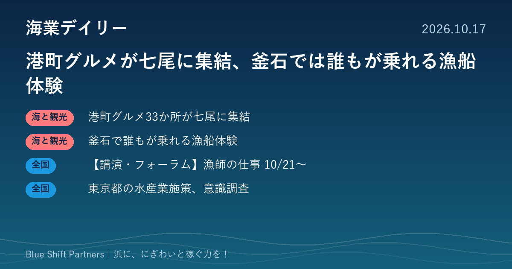

2026.10.17
港町グルメが七尾に集結、釜石では誰もが乗れる漁船体験

全国33か所のみなとオアシスが七尾市に集まる「Sea級グルメ全国大会」の詳細が発表されました。釜石市では、医療的ケアが必要な子どもと家族が漁船でカキ養殖場を見学するツアーが行われています。担い手確保のオンラインセミナーと、東京都の水産業に関する意識調査もあわせて紹介します。
全国33か所の港町グルメが七尾に集結、10月31日・11月1日にSea級グルメ全国大会
石川県七尾市は、第17回みなとオアシスSea級グルメ全国大会 in ななおを10月31日（土）と11月1日（日）に開催すると発表しました。メイン会場は和倉温泉運動公園ヨットハーバーで、北海道から九州まで全国33か所のみなとオアシスが、地元の水産物を使った料理を出店します。来場者の投票でSea級グルメNo.1を決めます。主催は同大会実行委員会とみなとオアシス全国協議会です。
ここがポイント：港の名物料理は、漁港のにぎわいづくりの入口になります。他地域の出店メニューや売り方は、直売所や漁協食堂の商品づくりの参考になります。
出典：七尾市「第17回みなとオアシスSea級グルメ全国大会 in ななお」開催のお知らせ（PR TIMES）（2026-10-16）
釜石市で医療的ケア児の家族が漁船に乗り、カキ養殖場を見学するツアー
認定NPO法人Plus One Happinessは、10月11日・12日に岩手県釜石市の根浜周辺で、重症心身障害児・医療的ケア児とその家族8家族が参加するユニバーサルツアーを行ったと報告しました。人工呼吸器を使ったまま漁船に乗り、三陸のカキ養殖の漁場を見学したほか、魚をさばく体験も行いました。宿泊施設や漁師、根浜シーサイド（かまいしDMC）、大学生などが協力しています。
ここがポイント：受け入れ側の工夫しだいで、漁船・養殖場の見学は幅広い人に開かれた体験になります。バリアフリー対応は、漁村観光の新しい客層づくりにつながります。
出典：認定NPO法人Plus One Happiness「人工呼吸器のまま漁船に乗り、海へ。8家族が参加した海業体験ツアーを釜石市で開催」（PR TIMES）（2026-10-14）
【講演・フォーラム】漁業の仕事を知る無料オンラインセミナー、10月21日から順次開催
全国漁業就業者確保育成センター（漁師.jp）は、「漁師の仕事！セミナー2026-27」を開催します。10月21日（水）17時からの中学生セミナー（オンライン、申込受付中）を皮切りに、11月18日に就活セミナー、12月9日に女子セミナー（いずれもオンライン）、2027年1月20日に東京・浜松町とオンラインでまるごとセミナーを予定しています。参加はすべて無料で、2027年2月の漁師フェアに先立って開かれます。
ここがポイント：漁協や自治体の担い手確保の担当者にとって、就業希望者がどんな情報を求めているかを知る機会になります。地元の就業支援の案内をつくる際の参考にもなります。
出典：全国漁業就業者確保育成センター（漁師.jp）「漁師の仕事！セミナー2026-27 開催します」（2026-09-15）
東京都が水産業振興施策に関する意識調査結果を公表、担い手対策を望む声は5割
東京都は10月15日、都の水産業振興施策として望むことを尋ねた調査の結果（回答496件、複数回答）を公表しました。最も多かったのは安全・安心な水産物の供給で74.4％、次いで清掃や藻場保全などによる海洋環境・生態系の保全が55.2％、漁業の担い手対策が50.0％でした。
ここがポイント：消費者が水産業に求めるのは、安全な魚に加えて海の環境と担い手の確保であることが数字で示されました。藻場保全や就業体験を観光・交流と組み合わせる海業の取り組みは、こうした関心に応える形になります。
出典：東京都 政策企画局「東京都の水産業振興施策」（2026-10-15）
港町グルメも、漁船体験も、担い手確保も、出発点は「浜に人を呼ぶ」ことです。釜石の例のように、受け入れ方を少し工夫するだけで、これまで来られなかった人が浜の客になります。自分の浜で「まだ迎えられていない人」は誰か、一度考えてみる価値がありそうです。